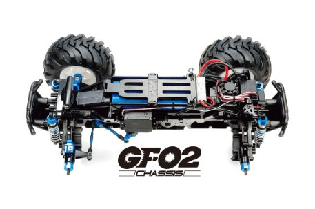

タミヤ GF-02

引用元画像：タミヤ公式サイト
📋 基本情報
| メーカー | タミヤ（Tamiya） |
|---|---|
| 機種名 | GF-02 シャーシ |
| 型番 | 58725（スカッシュバン）など |
| 発売時期 | 2023年9月頃 |
| 生産状況 | 現行販売中 |
| カテゴリー | ラジコンカー（1/10スケール 電動RCカー） |
| サブカテゴリー | オフロード・ビッグタイヤ（初心者〜中級者向け） |
| 価格 | 22,510円（税込） |
📏 シャーシスペック
| ホイールベース | ロングホイールベース |
|---|---|
| トレッド | ワイドトレッド |
| タイヤ径 | 直径123mm 大径ラグパターンタイヤ |
| フレーム | モノコックフレーム（ラダー/パイプをイメージさせるスリムで立体的な造形） |
⚙️ 駆動系
| 駆動方式 | ギヤドライブ4WD |
|---|---|
| デフギヤ | 前後デフギヤ内蔵 |
| ギヤ比 | 3種類から選択可能（別売のピニオンギヤが必要） |
| モーター | 540タイプ（センター低位置配置） |
| ギヤケース | 密閉式（フレーム一体型、小石の侵入をシャットアウト） |
| モーターガード | 標準装備 |
🔧 サスペンション
| 形式 | 4輪ダブルウィッシュボーン独立 |
|---|---|
| ダンパー | フリクションダンパー |
| ステアリング | 等長2分割タイロッド式 |
💡 特徴
タフ&スリムが特徴のギヤドライブ4WD
- 舗装路からオフロードまで、ダイナミックな走りを楽しめる
- ギヤドライブ4WDシャーシ
スリムで立体的なデザイン
- モノコックフレームはラダー/パイプをイメージさせるスリムで立体的な造形が特徴
密閉式ギヤケース
- ギヤケースはフレーム一体型として、小石などの侵入をシャットアウトする密閉式
ギヤ比調整可能
- 別売のピニオンギヤを用意すれば、3種類のギヤ比が選択可能
モーターガード標準装備
- オフロード走行時の信頼性も十分
安定した走行性能
- ロングホイールベース・ワイドトレッドの車体構成により安定したオフロード走行が楽しめる
レトロなアメリカンデザイン
- スカッシュバンのボディは、1970年代のアメリカンバンを彷彿とさせるレトロなデザインが魅力
🔧 ぽすとそに工房での修理実績
修理難易度
★☆☆☆☆（非常に簡単、初心者でも修理可能）
よくある故障・注意点
- 大径タイヤのため、モーターに負荷がかかりやすい（適切なモーターとギヤ比の選択が重要）
- ギヤケースが密閉式だが、走行後は必ず掃除が必要
- 砂や小石が入り込むと、ギヤの摩耗が早まる
メンテナンスのポイント
- ギヤケースが密閉式だが、走行後は必ず掃除をする
- 砂や小石が入り込むと、ギヤの摩耗が早まるため注意
- 適切なモーターとギヤ比の選択が重要
初心者へのおすすめポイント
- フリクションダンパーなので、オイルダンパーのようなメンテナンスが不要
- 初心者にも扱いやすい
- ギヤドライブ方式なので、シャフトドライブよりメンテナンスは簡単
カスタムの楽しみ
- GF-01用のオプションパーツが多数流用可能
- アルミパーツで強化すると、より本格的な走りが楽しめる
おすすめポイント
- ビッグタイヤの迫力ある走りを楽しみたい方
- レトロなアメリカン・バンが好きな方
- オフロード走行を手軽に楽しみたい方
- メンテナンスが簡単な機種を探している方
- ユニークなボディデザインに惹かれる方